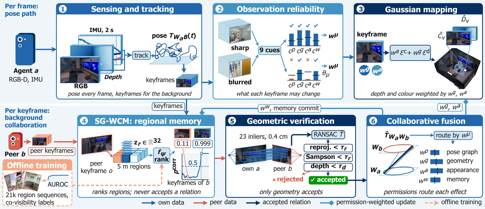
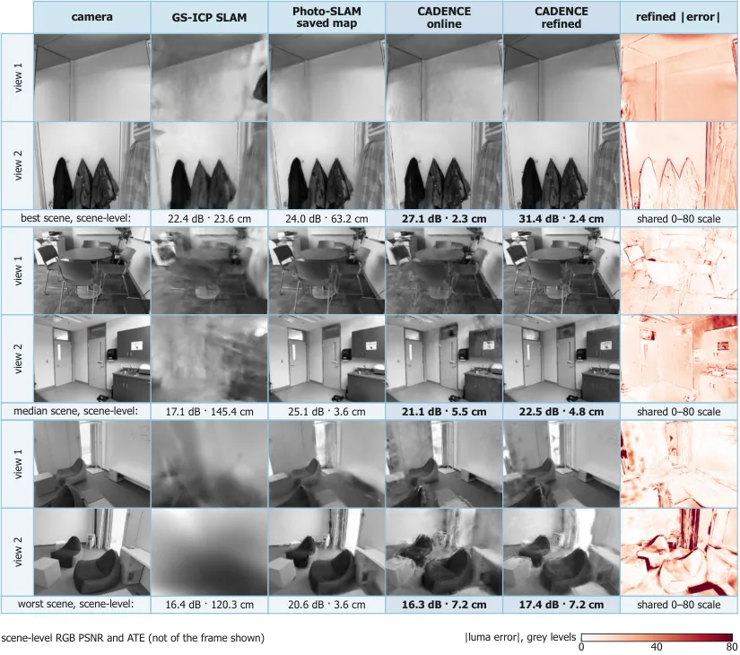
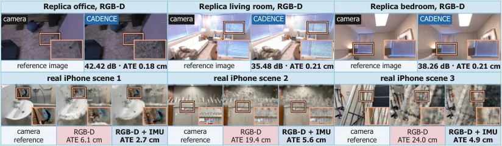
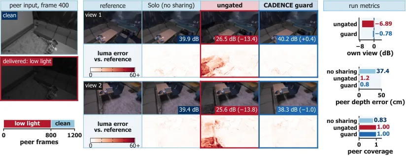

CADENCE：把「找匹配」与「允许改图」拆开的协同高斯 SLAM
CADENCE: Sensor-GroundedWorld-Consistent Gaussian SLAM for Collaborative Mobile Reconstruction
一句话：协同高斯 SLAM 的真问题不是「能不能匹配上」，而是「匹配上以后允许它改什么」——CADENCE 用区域记忆排序、几何验证兜底、逐模态置信度授权，把一次错配的破坏面限制在单个模态内。
AUROC
links/false
PSNR loss
ATE
作者、单位与技术谱系 · Research context
作者与单位
研究脉络
- 3D Gaussian Splatting（Kerbl et al., 2023）方法基座关系：表征与可微渲染的底座：本文的高斯子图、按子图位姿变换拼接地图、以及颜色项 (1−λ)E^c + λ(1−SSIM) 的渲染监督，都直接沿用 3DGS 的形式，没有换成 NeRF 或体素。[CADENCE §3.2 式 (2) 与参考文献 kerbl20233d]
- MonoGS / SplaTAM / Photo-SLAM（单智能体高斯 SLAM）上游方法关系：技术路线接续：单机高斯 SLAM 已确立「跟踪 + 高斯建图 + 在估计位姿上渲染评分」的范式，本文沿用同一范式并把 Photo-SLAM 作为手机端主基线，评测指标（ATE / PSNR / SSIM / LPIPS）与之对齐以便对比。[CADENCE §1、§4.5 与表 I]
- CP-SLAM / MagicSLAM / MACE-GO3D（多智能体协同高斯 SLAM）上游方法关系：问题定义的直接来源：协同高斯 SLAM 已用外观匹配 + 几何/光度配准把多机观测合并，本文借用 CP-SLAM 的 MA-Replica 评测基座，并把「匹配即合并」改成「匹配 → 验证 → 授权」三段。[CADENCE §1、§2、§4.1 与参考文献 hu2023cpslam / yugay2025magicslam / xu2025macego3d]
- CADENCE（本篇推进）本篇推进关系：在协同高斯 SLAM 之上补两道关：一是把候选排序做成传感器接地的学习型区域记忆（外观 + 相对位姿 + 重力 + 气压高度 + 质量），二是把「接受后的影响面」按模态切开；同时把本地跟踪与协同解耦成硬实时契约。[CADENCE §1 贡献列表]
合作网络
- BRAC University ↔ Deutsche Telekom AG（AI Competence Center）BRAC University, Dhaka → Deutsche Telekom AG, AI Competence Center关系：共同署名[arXiv 官方 HTML 首页署名块]
- CADENCE ↔ DINOv3（Meta 冻结视觉嵌入）CADENCE 区域记忆 → DINOv3 冻结嵌入关系：明确技术依赖[CADENCE §3.3、§5.3 与参考文献 simeoni2025dinov3]
- CADENCE ↔ CP-SLAM 的 MA-Replica 评测基座CADENCE 协同实验 → MA-Replica（CP-SLAM）关系：评测数据依赖[CADENCE §4.1 实验设置与表 IX 说明]
作者、单位与邮箱取自论文首页署名块（arXiv 官方 HTML），三条网络边分别对应「共同署名」「冻结模型依赖」「评测数据依赖」三种可核验关系。论文未标注通讯作者，第三作者是否担任指导角色属署名顺序的推断，已在条目中标注为未证实；未据任何重合推断导师/师生关系。代码状态以作者 LLM 声明中的「will be made publicly available」为准，仓库待核验。
方法本质拆解 · What actually changed
只训一个排序器，DINOv3 冻结
改动权重的地方只有一处：SG-WCM 的两层 128 单元感知机 f_ψ 与四个任务的 loss log-variance，在单个离线阶段联合训练，DINOv3 嵌入全程冻结、只作为缓存特征使用。训练标签来自共视、楼层身份与跟踪精度，正样本要求查询的 5 cm 深度体素至少 30% 落在记忆访问内、负样本不超过 5%，中间样本丢弃；同时用模拟的位姿对齐扰动与模态 dropout 做增强。推理阶段权重固定，没有在线微调、没有测试时适配，所以它不是「微调一个 SLAM 前端」，而是「离线训一个候选打分器」。
约束落在三个不同的变量上
第一层约束作用在候选关系上：η = p^corr·p^floor 且 p^corr ≥ 0.5，低于阈值的候选不进入验证；第二层作用在相对位姿上：重投影、平方根 Sampson、深度三个中位数不等式加 3° 重力倾斜、1.5 m 气压高度差、与历史对齐的一致性；第三层作用在地图更新上：九线索 → 四置信度 → 阈值化权限权重 w^μ，逐模态乘进渲染损失（颜色项 w^a、深度项 w^g）与图因子（w^p）、记忆提交（w^w）。额外先验是显式的：已知内参、相机-IMU 外参、传感器级米制几何，以及区域外接球半径归一化的区域相对位姿——没有这些先验，记忆的传感器证据项就没有统一尺度。
无全局 BA，只有局部图与一次性对齐
推理时每个智能体只做局部跟踪与高斯子图优化（稀疏 Adam、只在受影响的高斯上更新），协同侧不跑全局 bundle adjustment：接受的跨设备关系被转成 T̂_{W_aW_b} = T_{W_aB_i}T̂_{B_iB_j}T^{-1}_{W_bB_j}，作为图因子加权重 w^p，修正的是坐标系与子图原点而**不是**已存储的轨迹。合并（Merge）把验证过的同伴点以灰色、按 w^g 缩放的 opacity 插入；共享（Share）额外用对齐后的同伴视角、按 w^a 缩放外观权重；记忆提交要求 w^w 通过。姿态调用与建图、记忆、验证、联网完全隔离，队列满就丢弃或拒绝任务而不是阻塞。
把不确定性按来源切开，再用证据门槛逐项放行
串起来是一条因果链：区域记忆先把「哪个区域可能对应」的不确定性降下来（AUROC 0.95–0.97），几何验证再把「这条关系是否真的成立」的不确定性用固定阈值卡住（错链 1/345），最后逐模态置信度把「这条已成立的关系能改什么」的不确定性分到四个自由度上，于是暗光同伴的深度仍可写进地图而颜色被拒。它没有做的是：没有全局 BA、没有跨设备联合优化所有位姿、也没有学习型地图一致性检验（map-aware confidence 被列为未来工作），因此对于「几何自洽但位置错误」的副本，系统结构上无法拒绝——这是设计边界，不是调参能解决的问题。
输入多机 RGB-D/IMU/气压与冻结 DINOv3 嵌入；改变的是「候选排序器 + 逐模态权限权重」两处；动作为区域记忆排序 → 几何验证 → 四置信度授权 + 图因子加权；直接效果是错链 1/345、八种退化下接收方损失 2.66→1.05 dB，且本地跟踪不被拖慢。

结论与问题Conclusion & Motivation
核心结论
CADENCE 的贡献不是把协同 SLAM 做得更准，而是把「协同」从共享一张地图改成对每条外来证据做授权。它把流程切成三段：区域记忆负责排序候选、几何验证负责接受或拒绝、逐模态置信度负责决定接受后能改位姿约束/几何/外观/记忆中的哪几项，因此一个暗光同伴被拒掉的只是颜色，它的深度仍然进入接收方地图。在 8 个未参与训练的 Matterport3D 房屋上，区域候选排序的 AUROC 为 0.951–0.970（外观检索 0.710–0.894），同口径几何验证把错链压到 345 条中 1 条（0.29%）。八种退化条件下，软加权把接收方自身视角的平均 PSNR 损失从 2.66 dB 降到 1.05 dB，且在 8 个条件里全部优于阈值门控（guard）。系统真的跑在手机上：12 条留出 iPhone 扫描平均 ATE 6.98 cm，双机实时会话的姿态调用 p95 为 10.0–11.3 ms（iPhone 15）。
动机与问题
多机协同的直觉收益是覆盖更快更全，但作者指出的真实瓶颈是「匹配到同一个地方」与「这份观测对接收方是否有用」是两件不同的事：一台手机可能正确认出了地点，同时提供低照度、过曝或运动模糊的观测。已有协同高斯 SLAM（MagicSLAM、MACE-GO3D 一类）主要靠外观匹配加几何/光度配准把多机观测合到一起，隐含假设是匹配成功即信息可用。CADENCE 明确否定这个假设，并把它拆成三个可分别验证的决策，其中第三步最关键：位姿、几何、外观、记忆各自有独立置信度，信道质量差不等于几何不可用。作者还把「本地跟踪不能被后台协同拖慢」写成硬契约：姿态调用 p95 必须 ≤33.3 ms（30 Hz 输入的一帧周期），队列满时丢弃而不是等待。
方法Method
方法总览
每个智能体独立做稀疏特征跟踪 + 预积分 IMU 预测 + 鲁棒重投影优化，有稠密深度的档位改用 surfel 模型配准，关键帧进入有界后台队列；本地维护高斯子图，图优化只改子图位姿变换而不重拟合。协同侧有三层：SG-WCM 用「已提交观测」的统计量为每个立方区域维护一个 32 维 token 与冻结 DINOv3 嵌入缓存，输出候选区排序；验证层用一张复用的证据包（缩略图 + 稀疏深度 + BRIEF 描述子）做互相匹配、三点 RANSAC + PnP，再用重投影/对极/深度的中位数检验接受关系；授权层把九种质量线索映射成位姿、几何、外观、记忆四个置信度，按阈值或软加权决定每条外来更新进入哪个环节。只有属主能改自己的地图，记忆只在验证通过且记忆权限允许后才提交。
关键技术细节
记忆查询向量 95 维：32 维区域 token + 区域相对位姿（用区域外接球半径归一化）+ 质量与四个置信度 + 传感器证据 + 可用性掩码 + 嵌入相似度统计；传感器证据写成相对量 e^ga = [h_o − h̄_r, σ_h,o, (γ_o − γ̄_r)ᵀ]，即气压高度差、其不确定度、以及体坐标系重力的差（除以 9.81），因此设备倾角被显式编码，空区域两项为零。预测头是两层 128 单元 ReLU 的感知机，输出 logits 与增量 δ，token 按 z_r ← clip(z_r + tanh δ, −4, 4) 更新；推理时只用对应头 p^corr、p^floor、p^rel，一次查询本身不改变任何区域状态。候选排序为 η_ok = p^corr·p^floor 且要求 p^corr ≥ 0.5，同分按嵌入距离；区域内关键帧顺序由检索决定。验证用三个中位数不等式：重投影 ‖π(T̂X_i) − u_i‖ < τ_r、平方根 Sampson 误差 < τ_r（τ_r = 2 px）、深度 |z_j − ẑ_j| < τ_d（0.10 m）。授权阈值 (θ_p, θ_g, θ_a, θ_w) = (0.3, 0.4, 0.5, 0.3)，同伴可靠性是历史报告的滑动平均（先验 0.5），贡献置信度取「滑动平均」与「本帧报告」的逐元素最小值，避免先验盖过当下降级。

实验Experiments
实验设置
单机重建在 Replica-8 上评，协同在 MA-Replica 与时间交织的三智能体 Matterport3D 行走上评；真实手机用 ScanNet++ 的 iPhone 序列（图像、LiDAR 深度、真实 IMU、ARKit 位姿），其中气压计与 ScanNet++ 之外的惯性流是合成的。所有接受阈值（θ_μ、τ_r、τ_d、0.2 位姿置信度下限、3° 重力倾斜、半层楼高度差）在协同实验之前冻结，改过的只有嵌入筛选阈值（在 4 个 VAL 房屋上选），作者还特意保留「重力检查误拒真链」的结果不做回调。指标：ATE 为刚体对齐后的位置 RMSE（cm），PSNR/SSIM/LPIPS 在各方法自己估计位姿下渲染其建图关键帧，因此量的是重建一致性而不是新视角合成。对照分三组输入：RGB-D + IMU + ARKit 平台运动、仅 IMU、纯 RGB-D（与 Photo-SLAM、GS-ICP SLAM、ORB-SLAM3 同输入）。
实验数字与比较
协同侧：在 4 个已连通的未见房屋上，区域记忆的 AUROC 0.951–0.970，对比检索距离 0.710–0.894（§5.2 与图 3c）；反过来关键帧对排序是检索更强（0.947–0.990 对记忆 0.480–0.881），所以最终用「记忆选区、检索选帧」的混合策略。关联侧（§5.3 的关联策略表，8 个未见房屋、关闭物理检查）：混合策略 11840 次验证得 345 条链、1 条错（0.29%），嵌入相似度 10351 次得 503 条、2 条错（0.40%），纯描述子检索 73 条 0 错但只连上 2 个 VAL 房屋。单机侧：Replica-8 加 IMU 后 ATE 0.26 cm、PSNR 37.40 dB，纯 RGB-D 为 0.41 cm / 38.50 dB（Photo-SLAM 0.60 / 34.96，GS-ICP SLAM 0.16 / 38.83）。iPhone TEST3 十二条：纯 RGB-D 41.04 cm → 加原始 IMU 与 ARKit 6.98 cm，精化 6.81 cm / 24.04 dB（比保存的 Photo-SLAM 平均高 1.17 dB，12 条中 8 条更好）；ARKit 轨迹 4.16 cm、惯性 ORB-SLAM3 5.82 cm 更准但不产地图。MA-Replica 合并图 ATE-KF 0.35 cm、PSNR 37.26 dB，已发表协同高斯系统自报 0.14–0.25 cm 与 34.26–41.35 dB（协议不同，仅作外部参照）。
消融/失败边界
记忆的消融是逐项加证据（§6.3 与附录记忆消融表）：A0 纯 DINOv3 相似度 → A5rel（相对重力/高度 + 质量，去掉惯性增量）在记忆测试 0.913→0.946、7-Scenes 0.876→0.931、MP3D 0.939→0.977、MP3D 首接触 0.879→0.948；其中区域相对位姿贡献最大（+0.043，95% 区间 +0.031–+0.053），低重叠对上 MP3D 0.926→0.968、7-Scenes 0.815→0.895。授权策略的消融（§5.5 与附录逐场景表，两场景）：软加权把接收方自身视角平均损失从无门控的 2.66 dB 降到 1.05 dB，在 8 个条件里 7 个优于无门控、8 个全部优于阈值门控；门控在低照度下只损失 0.40 dB，并把同伴区深度误差降 17.39 cm。失败边界写得很直白：接受记忆预测而不做几何检查时，VAL 76 条里 5 条错、192 个注入的楼层副本全部被接受；几何验证对 29 条真链 0 错但接受了 225 个楼层副本；物理检查（气压高度）拒掉全部 225 个副本，同时误拒 12 条真链（实测倾角 3.12°，刚好超过 3°）。最硬的边界是几何上自洽的错副本：30 m 外完全相同的房间在几何、重力、高度上都通过，作者明确说这是局部传感器证据验证的极限；7-Scenes 上仍有 9/413 错链（Clopper–Pearson 上界 4.1%），镜像孪生视角 56 个里接受了 8 个。
局限与迁移Limitations & Transfer
局限与待核验
作者明确承认的：全部实验都在室内；协同以回放为主，气压计是合成的（ScanNet++ 之外 IMU 也是合成），真机只做双机短会话且用刚性固定的手机对当伪真值替代外部真值；验证可能接受几何自洽的地点副本；基于线索的置信度无法识别「自洽但与接收方地图矛盾」的同伴（曝光失配与发送位姿噪声都能通过置信度检查，让步态接收方损失 3.58–8.44 dB）。我们另外要核验的：一是「精化后 PSNR 24.04 dB 优于保存的 Photo-SLAM 地图」依赖对方已保存的关键帧视图，不是干净的新视角对比，跨系统结论只能作参考；二是 MA-Replica 上 0.35 cm / 37.26 dB 落在已发表 0.14–0.25 cm 之后，作者只说「各自协议」，我们没有在统一协议下复现；三是记忆训练用 2 m 区域、运行用 5 m 区域，作者按预定判据保留 5 m（2 m 在 VAL 2 的区域标签 AUROC 掉到 0.903，超出 0.02 容差），这种训练/推理尺度不一致在别的场景是否需要重训尚未验证；四是 LLM 声明说「代码将公开」，目前没有找到仓库，复现性待核验。
与你研究路线的关系
最值得迁移的是「拒绝一条观测 ≠ 拒绝整帧」这个建模方式：把外来信息来源拆成位姿/几何/外观/记忆四个置信度，每个模态独立设阈值或软权，正好对应我们多源融合里「GNSS 伪距可用但多路径严重、视觉几何可用但颜色失效」的情形——现在我们的做法是整帧降权或整源剔除，CADENCE 给了一个更细的授权粒度。第二个可迁移模块是把「学习」限制在候选排序上、把状态正确性交给几何验证：我们的松耦合管线同样可以引入一个学习型候选打分器（区域/时段级），但状态更新仍走因子图与卡方检验，避免学习模块直接污染状态。第三个是验证协议：用「同一验证器下的策略对比」而不是各系统自报数字，以及错链率配 Clopper–Pearson 上界——这两条我们复评协同/回环时可以照搬。下一步最小实验：在现有 smoothing_test2 数据上做一次「按模态授权」的对照，把回环因子拆成位姿约束与几何（点云/深度）两部分分别加权，看是否能在暗光/高动态段保留几何增益同时不引入位姿污染；同时用他们冻结阈值的做法，先固定阈值再扫场景，避免事后调参。



